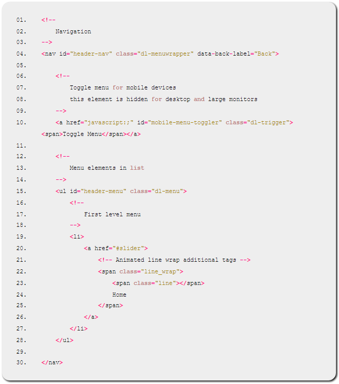

Unicum HTML Documentation
Introduction
Thank you for purchasing Unicum HTML5 template. We hope that you will be satisfied with our work and it will please you.
Unicum is a Responsive Retina-Ready HTML5 / CSS3 (Desktop, tablet, mobile phone, etc.) one-page template. Simple, clean, modern and professional.
It is suitable for multipurpose websites such as Agency/ Personal or Application Landing Website. It is superbly responsive adapting to any kinds of phones or tablets. Code is easy to modify and understand so you can personalize it in the easiest way.
Premium Support
We provide a support for all of our customers in conformity with the rules of Envato Market / ThemeForest. We give you the guarantee of quality of our products, so we have a dedicated support team that will help you to resolve possible problems with our themes as soon as possible.
If you have an idea how to make our products better, please contact us! Best and popular ideas will be necessarily implemented in future releases, but, please note, than we do not provide Customization service as a part of support.
So, In which cases can I get support of theme that I’ve purchased?
If You found a bug, or any function does not work like on our demo, just open a ticket at our support system http://wplab.pro/.
Support requests are being processed on business days in the order they were received, from 10:00 AM to 06:00 PM (UTC+2 time zone, Europe). Please note that your time zone may differ.
What is not included in the support?
For individual customizations, consider to hire a freelancer who can help you to customize your template with Your needs.
HTML Structure
Template contains 10 HTML files:
- index.html – Agency Website Home page
- index-app.html – Application Landing Home page
- index-personal.html – Personal Website Home page
- blog.html – A page with a list of blog posts
- blog-single.html – Single Article page
- page.html – An example of a website inner page
- sidebar-left.html – An example of a page with a left sidebar
- header-simple.html – An example of a page with a simple header, without moving effect
- header-scroll.html – Container page header with effects
- footer-simple.html – An example of page with a simple footer without parallax effect
Template resources like images, css and JS files are located in a relevant directories, e.g.: /css/, /js/, /images/, you can find them at template root directory.
Unicum HTML is a responsive template. It uses a 12columns fluid grid (based on Bootstrap) to set the elements positions.
Grid systems are used for creating page layouts through a series of rows and columns that house your content. Here’s how the Bootstrap grid system works:
- Rows must be placed within a .container (fixed-width) or .container-fluid (full-width) for proper alignment and padding.
- Use rows to create horizontal groups of columns.
- Content should be placed within columns, and only columns may be immediate children of rows.
- Predefined grid classes like .row and .col-xs-4 are available for quickly making grid layouts. Less mixins can also be used for more semantic layouts.
- Columns create gutters (gaps between column content) via padding. That padding is offset in rows for the first and last column via negative margin on .rows.
- The negative margin is why the examples below are outdented. It’s so that content within grid columns is lined up with non-grid content.
- Grid columns are created by specifying the number of twelve available columns you wish to span. For example, three equal columns would use three .col-xs-4.
- If more than 12 columns are placed within a single row, each group of extra columns will, as one unit, wrap onto a new line.
- Grid classes apply to devices with screen widths greater than or equal to the breakpoint sizes, and override grid classes targeted at smaller devices. Therefore, e.g. applying any .col-md-* class to an element will not only affect its styling on medium devices but also on large devices if a .col-lg-* class is not present.
Here is an example how to create four columns grid:
{kind=link}
You can read more about Bootstrap grid at Bootstrap’s website.
Template code is divided into sections having respective identifiers (#header, #footer, #content, #sidebar). Also, all the sections are separated by appropriate comments for fast code navigation.
Body classes
By adding or remove some of system body classes you can control a behavior of page. Here are system classes used in this template:
- home – should be used as identifier only for a home page
- blog – should be used as identifier only for a blog page
- blog single – use these classes together to split styles for posts page and article page
- page – used it as identifier for website inner pages
- preloader – this body class say to JavaScript that JS should preload all images before page will be shown. To remove page preloader, simply remove this class from your BODY tag
- one-page – use this class only for pages where one-page menu navigation will be used
- transparent-header – displays header menu without background. Can be useful for a pages with full screen backgrounds
- intro-header – styles your header for hero images or a slider
- fixed-header – allows to display or hide header menu with headroom.js script when user scrolls the page
- parallax-footer – makes awesome footer parallax effect. To disable it, just remove this class from your BODY tag
- sidebar-left – displays page sidebar on a left side instead of right
Here is an example, how to use body classes in a couple:
{kind=link}
The code above means that you’re using home page with a preloader, transparent header and parallax footer effect.
CSS Animations
Each element of template can be animated in an easy way, you can control animation effects, animation duration and delay by adding necessary classes to any element.
You may see how to do that on a screenshot. Add “wow” class to make element animated and “effectName” class to change effect.
{kind=link}
Header will be displayed with FadeIn animation effect, and text paragraph will be shown with “bounce” effect. Examples of animations can be found by following this link. You can use:
- bounce
- flash
- pulse
- rubberBand
- shake
- swing
- tada
- wobble
- jello
- bounceIn
- bounceInDown
- bounceInLeft
- bounceInRight
- bounceInUp
- bounceOut
- bounceOutDown
- bounceOutLeft
- bounceOutRight
- bounceOutUp
- fadeIn
- fadeInDown
- fadeInDownBig
- fadeInLeft
- fadeInLeftBig
- fadeInRight
- fadeInRightBig
- fadeInUp
- fadeInUpBig
- fadeOut
- fadeOutDown
- fadeOutDownBig
- fadeOutLeft
- fadeOutLeftBig
- fadeOutRight
- fadeOutRightBig
- fadeOutUp
- fadeOutUpBig
- flip
- flipInX
- flipInY
- flipOutX
- flipOutY
- lightSpeedIn
- lightSpeedOut
- rotateIn
- rotateInDownLeft
- rotateInDownRight
- rotateInUpLeft
- rotateInUpRight
- rotateOut
- rotateOutDownLeft
- rotateOutDownRight
- rotateOutUpLeft
- rotateOutUpRight
- slideInUp
- slideInDown
- slideInLeft
- slideInRight
- slideOutUp
- slideOutDown
- slideOutLeft
- slideOutRight
- zoomIn
- zoomInDown
- zoomInLeft
- zoomInRight
- zoomInUp
- zoomOut
- zoomOutDown
- zoomOutLeft
- zoomOutRight
- zoomOutUp
- hinge
- rollIn
- rollOut
How to control animation duration or delay? Use data-wow-duration="2s" and data-wow-delay="5s" attributes. For example:
{kind=link}
Now header’s effect duration will be 2 seconds, and element will be shown after 5 seconds once browser’s viewport will be on this element.
Header and menu structure
Navigation menu built for both mobiles and desktop devices, so it has a certain structure. Best of all it will be seen in the code with comments:

Menu block wrapped by <nav> HTML elment and it has additional data-back-label="Back" attribute. “Back label” attribute will be used for mobile menu only, this label appears on “Go back” link.
“Mobile toggle” menu link is hidden for desktop devices and will be shown for mobiles as a cross icon.
Menu structure uses unordered list (<UL> tag) to support a hierarchy, and, as you can see, top-level elements have animated strike effect. This result is achieved by adding additional markup for top-level elements.
The rest of the menu structure is no different from similar.
Structure of pages content
Any page is wrapped with <div id="wrap"> tag. Primary wrapper contains interior layout, e.g. for a home page it will be:
{kind=link}
As we mentioned before, template is compatible with Twitter Bootstrap, so feel free to use this habitual grid.
CSS & Less Files
What is LESS?
“LESS” is a dynamic style sheet language designed by Alexis Sellier. It is influenced by Sass and has influenced the newer “SCSS” syntax of Sass, which adapted its CSSlike block formatting syntax. Read more about LESS. (offcial LESS website)
How do i edit “LESS” files?
To edit “LESS” styles you need a one of “LESS” files compiler:
Please, not that to avoid compiling errors you should compile only “skin.less” file, as the rest of the files here are simply included by it. Here is an example, how to setup Koala compiler:
{kind=link}
How to change colors for my Template?
It is really simple to change all template colors by editing “skin.less” file. Open it at your favorite HTML editor:
{kind=link}
As you can see, template has a different vars that you may edit for your needs. To change primary text color, edit “@color_primary_text” var, then save “skin.less” file, and LESS compiler will automatically update stylesheet of theme
All LESS variables are easy to understand by their names, e.g. @color_blockquote_icon means the color of blockquote icon :)
Structure of template’s LESS files
- skin.less – primary skin file that contains variables, used in stylesheet. It includes additional files from “less” directory
- less/mixins.less – contains LESS functions used in template. We’ll talk about this very soon
- less/grid.less – contains Twitter Bootstrap grid
- less/libs.less – contains JavaScript plugin’s styles, e.g. gallery, “go top” link etc.
- less/shared.less – basic styles of template’s body and typography
- less/header.less – header, header menu styles
- less/blog.less – styles for single article page and list of posts page
- less/home.less – all styles for Home Page blocks
- less/sidebar.less – styles of sidebar widgets
- less/footer.less – footer styles
LESS mixins
Structure of template LESS files is simply to understand as it is divided by commented sections. Some parts of the code contain LESS functions, for example:
{kind=link}
Lets open mixins.less and find .rounded mixin:
{kind=link}
We see that the .rounded mixin accepts a @radius parameter whose value will be used for borderradius css propery output after compiling.
{kind=link}
Usefully, isn’t right?
JavaScript
Templat uses 20 additional JavaScript libraries. To increase page loading speed, they packed in one single file, named “all_in_one_libs.min.js” and it is located at /js/ directory.
The entire theme’s JavaScript is located in the js/front.js file. You can see the file structure at simplified screenshot below:
{kind=link}
As you can see, there are two sections in Core class, the first section is responsible for the construction of page, and second is responsible for a page events.
All JavaScript plugins, that should be initialized on page load should are placed in “build” method, and all handlers for clicks / window resize etc are placed in “events” class method.
Here is description of some jQuery plugins and JavaScript libraries used in a theme:
- headroom.min.js and jQuery.headroom.min.js – used for header (on page scroll) animation effect
- jquery.dlmenu.js – mobile menu navigation script
- jquery.easing.min.js – JavaScript easing library, used to create animation effects
- jquery.justifiedGallery.min.js – used for displaying portfolio block and filtering
- jquery.min.js – jQuery library, no explanation :)
- jquery.placeholder.min.js – JavaScript version of placeholders for old browsers
- jquery.scrollUp.min.js – “Go top” link
- jquery.sequence-min.js – Home page slider with animation effects
- jquery.singlePageNav.min.js – Used for a smooth single-page navigation
- jquery.waitforimages.js – Used in page preloader
- lazyYT.min.js – Loads YouTube videos in a lazy mode to increase site loading speed
- modernizr.custom.js – Used in “DLmenu” to make sure of supporting some features by client’s browser
- nivo-lightbox.min.js – A lightbox script. It displays a full image when you click on thumbnail
- numinate.1.0.1.min.js – Used for digits animation
- owl.carousel.min.js – Used to display blog images gallery
- retina.min.js – used for automatic image replacement with the files of double the size if they exist
- SmoothScroll.min.js – makes the page scrolling more smooth
- swiper.jquery.min.js – used for full-screen carousels, like Home Page blog posts
- wow.min.js – It runs CSS animations for any element once they appear on screen
Primary JavaScript file named front.js is well documented with comments and doesn’t need additional description. You will find all parameters of used plugins at their homepages. Full websites list located at the end of that help file.
PHP Files
This template comes with a working contact form and it includes a PHP script for this feature. To configure mail sending through the contact form, open contactform.php file and change the following strings:
{kind=link}
Save and close the file. That’s all. Now you can receive messages on your email address saved in settings
Source and credits
JavaScript Libraries:
- Headroom.js
- DL Menu
- Easing
- Formstone Wallpaper
- Justified Gallery
- jQuery
- Placeholder
- Scroll Up
- Sequence Slider
- Single Page Nav
- Wait For Images
- LazyYT
- Modernizr
- Nivo Lightbox
- Numinate
- OWL Carousel
- Retina JS
- Smooth Scroll
- Swiper
- WOW Js
CSS Libraries:
Fonts:
Graphic Used:
Once again, thank you so much for purchasing Unicum HTML5 Template. As we said at the beginning, we’d be glad to help you with any questions you might have regarding this template.
If you like it, please don’t forget to rate this template with 5 stars!
Thanks so much!
Best regards, WPlab Team